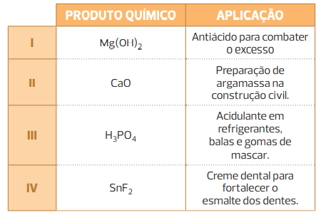

Mudanças climáticas na Terra contribuem para o aumento do efeito estufa.
RomoloTavani/iStockphoto.com
A Terra recebe energia do Sol de maneira constante, principalmente na forma de luz e outras radiações não visíveis. Parte dessa luz é absorvida pela superfície terrestre, enquanto o restante é refletido pela própria superfície na forma de radiação infravermelha
(não visível). O gás carbônico (CO
2 ), presente no ar, absorve essa radiação infravermelha e atua como um “cobertor”, evitando que ela escape para o espaço.
Porém, a concentração de CO
2 na atmosfera tem aumentado de maneira significativa e, segundo previsões científicas, ela pode dobrar nos próximos anos, afetando o clima do mundo. Isso pode provocar o derretimento do gelo das calotas polares
e elevar o nível dos oceanos de 5 a 6 metros, o que inundaria várias regiões costeiras e produziria um aumento de até 5
°
C na temperatura de toda a superfície terrestre.
Conclui-se que quanto maior for a concentração de CO
2 na atmosfera, maior será a absorção de radiação infravermelha, acarretando o aquecimento da Terra e a intensificação descontrolada do efeito estufa. É importante ressaltar que outros gases, como o CH
4 , o CFC e o N
2 O, encontrados na atmosfera, também contribuem para o efeito estufa, porém o CO
2 é o principal responsável.
Quartzo, hematita, pirolusita, cassiterita, bauxita e magnetita são óxidos abundantes na natureza. Você sabe que elemento químico compõe cada minério?
A chuva na sua cidade tem caráter ácido, básico ou neutro?
Neste capítulo serão abordadas as habilidades
EM13CNT101
,
EM13CNT104
,
EM13CNT105
,
EM13CNT201
,
EM13CNT205
,
EM13CNT306
e
EM13CNT307
.
O composto OF
2 não é um óxido, apesar de ser binário e ter oxigênio. O flúor é mais
eletronegativo do que o oxigênio e, nos óxidos, o oxigênio deve ser o elemento químico mais eletronegativo.
Definição de óxido
Óxidos são compostos binários formados por oxigênio e por um outro elemento químico; porém, o oxigênio deve ser mais eletronegativo do que o elemento ao qual está ligado. Chamando genericamente esse elemento químico de “E”,
podemos escrever a fórmula geral de um óxido:
E
y+ O
x–
➝
E
x O
y
Sendo que
x representa a carga do oxigênio (–2 em um óxido), e
y representa a carga do outro elemento químico.
Exemplos:
Ca
2+ O
2– : CaO Na
+ O
2– : Na
2 O
Nomenclatura
Dependendo do elemento químico ao qual o oxigênio está ligado, teremos uma nomenclatura diferente.
Quando o elemento químico (E) ligado ao oxigênio for um metal
Teremos um composto iônico, sólido à temperatura ambiente, quando o elemento químico ligado ao oxigênio (ametal) for um metal. Assim, utilizaremos a “regra do escorregador” para montar sua fórmula, e seu nome será dado
seguindo este padrão:
óxido
+
de
+
nome do elemento químico (E) ligado ao oxigênio
K
1+ O
2–=
K
2 O: óxido de potássio
Mg
2+ O
2–=
MgO: óxido de magnésio
Ba
2+ O
2–=
BaO: óxido de bário
A
ℓ3+ O
2–=
A
ℓ2 O
3 : óxido de alumínio
Quando o metal ligado ao oxigênio apresentar carga variável, devemos escrever o valor dessa carga (em algarismo romano) junto ao seu nome ou usar as terminações -ico (maior valor de carga) ou -oso (menor valor de carga), assim
como fizemos na nomenclatura das bases que apresentam esses metais de carga variável.
Fe
3+ O
2–=
Fe
2 O
3 : óxido de ferro(III) ou óxido férrico
Fe
2+ O
2–=
FeO: óxido de ferro(II) ou óxido ferroso
Cu
2+ O
2–=
CuO: óxido de cobre(II) ou óxido cúprico
Cu
1+ O
2–=
Cu
2 O: óxido de cobre(I) ou óxido cuproso
Quando o elemento químico (E) ligado ao oxigênio for um ametal
Teremos um composto molecular quando o elemento químico ligado ao oxigênio (ametal) também for um ametal, pois ametais realizam ligações covalentes entre si, e o óxido formado pode ser sólido, líquido ou gasoso. Seu nome será dado
utilizando o seguinte padrão:
(mono, di, tri, tetra...) óxido
+
de
+
(di, tri, tetra, penta...) nome do elemento químico (E)
N
2 O: monóxido de dinitrogênio
P
2 O
5 : pentóxido de difósforo
I
2 O
7 : heptóxido de di-iodo
CO: monóxido de (mono)*carbono
*O prefixo
mono para o elemento (E) que acompanha o oxigênio é opcional e costuma ser omitido, porém ele é utilizado para o oxigênio.
Classificação dos óxidos
Dependendo do elemento ao qual o oxigênio está ligado, teremos reações químicas características e um tipo de classificação para o óxido.
Óxidos básicos
Quando o elemento (E) ligado ao oxigênio for um metal, teremos um óxido de caráter básico, pois, ao reagir com a água, formará uma base. Os óxidos básicos são compostos iônicos que participam de dois tipos de reação: um 1
o tipo que reage com água, formando um composto com a função inorgânica base, ou um 2
o tipo que reage com um ácido, formando um composto com a função inorgânica sal e água.
óxido básico
+
água
➝
base (1
o tipo)óxido básico
+
ácido
➝
sal
+
água (2
o tipo)
Hidretos e carbetos
Hidretos são compostos binários formados por hidrogênio, sendo ele o elemento químico mais eletronegativo. Assim, o hidrogênio deve estar ligado a um metal. Veja alguns exemplos:
Na
+ H
–=
NaH: hidreto de sódio
Mg
2+ H
–=
MgH
2 : hidreto de magnésio
A
ℓ3+ H
–=
A
ℓ
H
3 : hidreto de alumínio
Hidretos reagem com água (representada por HOH na equação para facilitar o entendimento da reação), formando uma base e o gás hidrogênio:
Na
H+H OH
➝
NaOH
+H2
MgH
2+H OH
➝
➝
Mg(OH)
2+
2
H2 .
Carbetos são compostos binários em que um dos elementos é o carbono. Veja alguns exemplos:
CaC
2 : carbeto de cálcio
A
ℓ4 C
3 : carbeto de alumínio
Carbetos reagem com água formando uma base e um hidrocarboneto (espécie constituída apenas de C e H):
CaC
2+
2 H
2 O ñ
ñ Ca(OH)
2+
C
2 H
2
A
ℓ4 C
3+
12 H
2 O ñ
ñ 4 A
ℓ
(OH)
3+
3 CH
4
Lembre-se de que toda base é um composto iônico formado por um metal e pela hidroxila (exceto o NH
4 OH); assim, para montar sua fórmula química, devemos somar todos os elementos presentes nos reagentes e escrevê-los com o padrão utilizado nas bases. Veja alguns exemplos de reações com óxidos básicos e
água, características do 1
o tipo esquematizado anteriormente:
<Eqn002.png>
<Eqn003.png>
Vamos analisar agora as reações do 2
o tipo, em que o óxido básico irá reagir com um ácido. Inicie a reação formando a água; para isso, utilize os hidrogênios do ácido e os oxigênios da base. Na sequência, agrupe os elementos restantes para
formar o sal. Note que restaram dois átomos de sódio e dois átomos de cloro, que, juntos, formaram dois mols de cloreto de sódio, um sal (composto iônico: Na
+ C
ℓ– ). Veja:
<Eqn004.png>
Para formar a água, foi necessário utilizar dois mols de ácido clorídrico, uma vez que ele é um monoácido (1 H
+ ), e a fórmula da água possui dois hidrogênios.
Observe agora um segundo exemplo, que envolve o óxido de cálcio:
<Eqn005.png>
Para formar a água, foi necessário utilizar um mol de ácido sulfúrico, uma vez que ele é um diácido (2 H
+ ), e a fórmula da água possui dois átomos de hidrogênio. Restaram um átomo de cálcio, um átomo de enxofre e quatro átomos de oxigênio, que, juntos, formaram um mol de sulfato de cálcio, um sal (composto
iônico: Ca
2+ SO
42– ).
Questão resolvida
1
Uerj 2019 Café quentinho a qualquer hora: chegou ao Brasil o café
hot when you want , que, em português, significa “quente quando você quiser”. Basta apertar um botão no fundo da lata, esperar três minutos e pronto! Café quentinho por 20 minutos!
Adaptado de https://www1.folha.uol.com.br/folha/educacao/ult305u10268.shtml, 15/02/2002.
As latas desse produto possuem um compartimento com óxido de cálcio e outro com água. Ao pressionar o botão, essas duas substâncias se misturam, gerando energia e esquentando o café rapidamente. Escreva a equação
química que representa a reação entre o óxido de cálcio e a água, nomeando o produto formado e classificando-a, ainda, quanto ao calor envolvido.
Resolução:
quação química que representa a reação entre o óxido de cálcio e a água:
CaO(s)
+
H
2 O(
ℓ
)
➝
Ca(OH)
2 (aq)
+
calor
Produto formado (Ca(OH)
2 ): hidróxido de cálcio (exotérmica, pois libera calor).
Óxidos ácidos
Quando o elemento (E) ligado ao oxigênio for um ametal, teremos um óxido de caráter ácido, pois irá formar um ácido ao reagir com a água. Esses óxidos são compostos moleculares que participam de dois tipos de reação: um 1
o tipo no qual eles reagem com a água, formando um ácido, e um 2
o tipo no qual eles reagem com uma base, formando sal e água.
Os óxidos ácidos NO
2 e N
2 O
4 reagem com água, originando
dois ácidos :
2 NO
2+
H
2 O
➝
➝
HNO
3+
HNO
2
N
2 O
4+
H
2 O
➝
➝
HNO
3+
HNO
2
Os óxidos ácidos N
2 O
3 e N
2 O
5 ao reagirem com a água, formarão oxiácidos diferentes, uma vez que os oxiácidos formados por nitrogênio são monoácidos:
N
2 O
3+
H
2 O
➝
2 HNO
2
N
2 O
5+
H
2 O
➝
2 HNO3
Lembre-se de que todo ácido é um composto molecular formado por ametais (salvo alguns ácidos já estudados que possuem metais em sua composição, como o H
2 CrO
4 ). Para montar sua fórmula, devemos somar todos os elementos presentes nos reagentes. Veja alguns exemplos de reações com óxidos ácidos e água, características do 1
o tipo:
<Eqn009.png>
<Eqn010.png>
<Eqn011.png>
Note, no último exemplo, que o ácido formado por fósforo é um triácido (possui três hidrogênios ionizáveis: 3 H
+ ). Para que a reação fique devidamente balanceada, devemos utilizar três mols de água para formar dois mols de ácido.
A fórmula de um óxido ácido é a mesma da de um ácido que perdeu água, cujo nome, na Química, é
anidrido , ou
anidro (sem água).
Veja alguns exemplos de reações estudadas quando o ácido perde água:
Note que, no último exemplo, por se tratar de um triácido, precisamos de dois mols do ácido e três mols de água, pois um óxido é um composto binário formado por oxigênio e mais um elemento químico (nesse caso, o fósforo)
e não poderia “sobrar” hidrogênios.
<LUMEN_2021_2S_L3_QUI_F003.png>
Produção de gelo seco [s.d.], [s.l.].
CornelPutan/Shutterstock.com
Vamos analisar agora reações do 2
o tipo, em que o óxido ácido irá reagir com uma base. Inicie a reação formando a água; para isso, utilize dois hidrogênios e um oxigênio da base. Os átomos dos elementos químicos que restarem formarão o sal.
Veja:
<Eqn015.png>
Para formar a água, foi necessário utilizar dois mols de hidróxido de potássio, uma vez que essa base é uma monobase (apresenta 1 OH
– ), e a fórmula da água apresenta dois átomos de hidrogênio. Restaram dois átomos de potássio, um de enxofre e quatro de oxigênio (um dos oxigênios pertence ao KOH e não foi utilizado para formar a
água), que, juntos, formaram um mol de sulfato de potássio, um sal (composto iônico: K
+ SO
42– ).
Observe agora um segundo exemplo, utilizando o dióxido de carbono e o hidróxido de cálcio:
<Eqn017.png>
Para formar a água, utilizamos um mol de hidróxido de cálcio, uma vez que essa base é uma dibabase (apresenta 2 OH
– ), e a fórmula da água apresenta dois átomos de hidrogênio. Restaram um átomo de cálcio, um de carbono e três de oxigênio (um átomo de oxigênio pertence ao Ca(OH)
2 e não foi utilizado para formar a água), que, juntos, formaram um mol de carbonato de cálcio, um sal (composto iônico: Ca
2+ CO
32– ).
Para reproduzir experimentalmente a equação anterior, devemos colocar, em um tubo de ensaio, uma solução incolor aquosa de Ca(OH)
2 , conhecida como “água de cal”, e, com o auxílio de um canudinho, assoprar dentro do tubo de ensaio (lembre-se de que o ar que expiramos contém CO
2 ). A reação será evidenciada pela mudança de cor da solução, de incolor para branco, uma vez que o CaCO
3 forma um sólido branco insolúvel. Dizemos, então, que a solução ficou
turva .
Óxidos neutros ou indiferentes
São óxidos que não reagem com água, nem com ácidos nem com bases. Os principais são CO, NO e N
2 O.
O fato de não reagirem com água, bases ou ácidos não significa que eles não participam de nenhuma reação química. Por exemplo, o CO é um dos diversos produtos gerados na combustão incompleta do cigarro. Também, ao reagir
com a hemoglobina presente no sangue, formará a carboxiemoglobina, substância que impede o transporte de oxigênio, podendo causar dor de cabeça, enjoo, inconsciência ou, até mesmo, morte, caso ocorra a inalação de grande
quantidade do gás.
Óxidos duplos ou mistos
<F003-2020-EM-QUI-1-FB-L2-U5-C18.png>
Magnetita, pedra-ímã natural, composta por óxido duplo de ferro.
g-miner/iStockphoto.com
São óxidos formados por metais que possuem carga variável. A
magnetita (pedra-ímã natural) é um óxido duplo, formado pela união do óxido de ferro(II) com o óxido de ferro(III) – conhecido como hematita, principal minério do ferro. Seu nome oficial seria óxido de
ferro(II-III), porém seu nome usual (magnetita) é o mais utilizado. Veja:
FeO
+
Fe
2 O
3➝
Fe
3 O
4
Outro exemplo é o
zarcão , utilizado como base na pintura de superfícies metálicas para evitar a formação de ferrugem. Ele é um óxido duplo formado pela união do óxido de chumbo(II) e do óxido de chumbo(IV). Seu nome oficial seria
óxido de chumbo(II-IV).
O zarcão é utilizado como base na pintura de superfícies metálicas, evitando a formação de ferrugem.
São óxidos que possuem características ambíguas, podendo assumir caráter básico ou ácido, dependendo da substância com a qual estiverem em contato. São compostos por elementos localizados na parte central da tabela periódica (Zn, Pb, Sn, A
ℓ
, As e Sb) e podem participar de dois tipos de reação: um 1
o tipo em que apresentam caráter básico, pois reagem com um ácido for-te, formando sal e água, ou um 2
o tipo em que apresentam caráter ácido, pois reagem com uma base forte, formando sal e água.
Como exemplo, vamos utilizar o óxido de zinco (ZnO), conhecido como alvaiade – um pó branco usado para pintar o rosto.
<Eqn019.png>
<F019-2020-EM-QUI-1-L2-FB-U5-C18.png>
A maquiagem branca é composta por óxido de zinco (ZnO).
powerofforever/iStockphoto.com
Peróxidos
A água oxigenada é uma solução aquosa de fórmula H
2 O
2 , cujo nome oficial é peróxido de hidrogênio. Ela é muito utilizada na desinfecção de ferimentos e como produto de limpeza em residências. Além disso, é empregada nos seguintes setores da indústria química:
processamento de madeira, celulose e papel; tratamento de despejos industriais; fabricação de solventes e plásticos; e branqueamento industrial das fibras de algodão para fazer tecidos. A fórmula eletrônica da água
oxigenada está representada a seguir.
Se fosse possível retirar os dois hidrogênios dessa solução, cada oxigênio perderia um elétron, e a estrutura resultante teria dois átomos de oxigênio e duas cargas negativas:
O íon resultante é o íon peróxido (O
22– ). Ele se liga ao hidrogênio, aos metais alcalinos (IA) ou aos metais alcalino-terrosos (IIA). Sua nomenclatura oficial é:
H
1+ O
22–=
H
2 O
2 : peróxido de hidrogênio (não podemos simplificar)
Na
1+ O
22–=
Na
2 O
2 : peróxido de sódio
K
1+ O
22–=
K
2 O
2 : peróxido de potássio
Ca
2+ O
22–=
CaO
2 : peróxido de cálcio
A água oxigenada é vendida em farmácias e lojas de produtos de beleza em embalagens escuras ou opacas, pois ela se decompõe ao entrar em contato com a luz, liberando gás oxigênio e água, como mostra a equação química:
2 H
2 O
2 (
ℓ
)
➝
2 H
2 O(
ℓ
)
+
O
2 (g)
Nos rótulos das embalagens, aparecem informações como 10 volumes, 20 volumes etc. Esse valor está relacionado ao volume de gás oxigênio liberado na decomposição total de 1 L de H
2 O
2 . Isso significa que, se o volume liberado for de 10 L, a água oxigenada será chamada de 10 V; se o volume liberado for de 20 L, a água oxigenada será de 20 V etc.
Superóxidos
Assim como os peróxidos, são óxidos que possuem um grupo característico (O
42– ), apresentando como número de oxidação (Nox) médio do oxigênio o valor
–
. Nesse tipo de composto, o oxigênio se liga aos metais alcalinos (IA) ou aos metais alcalino-terrosos (IIA). Sua nomenclatura oficial é:
Na
1+ O
42–=
Na
2 O
4 : superóxido de sódio (não podemos simplificar)
Ca
2+ O
42–=
CaO
4 : superóxido de cálcio
Superóxidos são compostos extremamente instáveis; assim, não os encontramos na natureza.
Aplicações no cotidiano
Chuvas ácidas
Toda chuva é naturalmente ácida, pois as plantas e os animais, ao expirarem, eliminam CO
2 , um óxido ácido. Quando chove, ele reage com a água da chuva, produzindo ácido carbônico, um ácido fraco.
CO
2 (g)
+
H
2 O(
ℓ
)
➝
H
2 CO
3 (aq)
Note que a presença do ácido formado
não se deve a um ambiente poluído nem à presença de raios .
Essa chuva não causa danos ao meio ambiente.
... nas camadas da Terra, mais especificamente na crosta terrestre, podemos encontrar grande quantidade de óxidos:
Quartzo, cristal de rocha, sílica (SiO
2 ).
Sebastian Janicki/Shutterstock.com
Hematita, principal minério de ferro
Fe
2 O
3 .
ian600f/iStockphoto.com
Bauxita, minério de alumínio A
ℓ2 O
3 .
Craig Walton/Shutterstock.com
Cassiterita, minério de estanho SnO
2 .
AlvaroRT/iStockphoto.com
Magnetita, pedra-ímã natural Fe
3 O
4 .
NatureNow/iStockphoto.com
Pirolusita, principal minério de manganês MnO
2 .
sakdinon/iStockphoto.com
No entanto, existem chuvas ácidas formadas em
ambientes não poluídos, mas na presença de raios e relâmpagos . Elas são formadas quando os gases nitrogênio (N
2 ) e oxigênio (O
2 ) presentes no ar reagem entre si, formando óxidos de nitrogênio que, ao reagirem com a água, produzem ácido nítrico (HNO
3 ). Podemos equacionar as reações:
O HNO
2 formado se decompõe, gerando mais HNO
3 :
3 HNO
2 (aq)
➝
HNO
3 (aq)
+
H
2 O(
ℓ
)
+
2 NO(g)
Se essas reações ocorrerem em
ambientes poluídos , teremos uma verdadeira e preocupante chuva ácida, com pH
<
5,6 e agressiva ao meio ambiente. Entendemos por ambientes poluídos aqueles onde encontramos alta concentração de NO e NO
2 – como as fábricas que produzem HNO
3 , uma vez que suas chaminés lançam grande quantidade de NO
2 , e os grandes centros urbanos das metrópoles, que possuem tráfego intenso de veículos motorizados, liberando esses óxidos de nitrogênio dos escapamentos. O uso de catalisadores especiais nos canos do escapamento
dos veículos provoca a reação contrária, ou seja, a decomposição dos óxidos de nitrogênio nos gases N
2 e O
2 , evitando a formação desse tipo de chuva.
O NO
2 eliminado pelos escapamentos dos veículos pode reagir com o oxigênio do ar a baixas altitudes e produzir ozônio, outro poluente atmosférico. O ozônio é benéfico para o ser humano quando está na estratosfera,
pois filtra os raios ultravioleta provenientes do sol. Em baixas altitudes, ele provoca irritação na garganta e nos olhos; afeta também os vegetais, pois interfere na fotossíntese, prejudicando o rendimento das lavouras;
e causa a morte de peixes pequenos, prejudicando vários níveis da cadeia alimentar em ambientes aquáticos. Equacionando essa reação teremos:
NO
2+
O
2➝
NO
+
O
3
Os veículos dos grandes centros urbanos são, majoritariamente, movidos por combustíveis derivados do petróleo. Assim, sua queima também lança SO
2 para a atmosfera, pois o enxofre é a impureza desses combustíveis e, ao ser queimado (sofrer combustão), transforma-se em SO
2 , agravando ainda mais o problema da formação desse tipo de chuva ácida.
S
+
O
2 (g)
➝
SO
2 (g)
SO
2 (g)
+
O
2 (g)
➝
SO
3 (g)
SO
3 (g)
+
H
2 O(
ℓ
)
➝
H
2 SO
4 (aq)
O ar encontra-se poluído por SO
2 em regiões nas quais encontramos fábricas de H
2 SO
4 . Assim, podemos considerar poluentes atmosféricos os óxidos CO, SO
2 e NO
x .
Esquema geral do aparecimento da chuva ácida e suas consequências ao ambiente.
Em textos mais técnicos, é comum a simbologia NO
X , na qual o índice
x é utilizado para designar genericamente todos os óxidos que aqueles elementos químicos podem formar, no caso do nitrogênio, NO e NO
2 .
A chuva ácida traz prejuízos para a agricultura, pois destrói os solos e as folhas dos vegetais, torna a água dos rios e lagos imprópria para a vida de peixes e corrói estruturas de mármore, ferro e outros materiais utilizados
em monumentos e construções.
A seca e as queimadas no Pantanal
O Pantanal é o menor bioma brasileiro em extensão territorial e está localizado no Centro Oeste do país, ocupando parte dos estados do Mato Grosso e do Mato Grosso do Sul. O bioma, que também atinge o território da Bolívia
e do Paraguai, tem grande importância para o ambiente e a sociedade, pois é rico em biodiversidade, possui um grande volume de água doce e possibilita uma série de atividades econômicas, como a agropecuária e o turismo.
De acordo com a UNESCO (Organização das Nações Unidas para a Educação, a Ciência e a Cultura), o Pantanal é Patrimônio Natural Mundial e Reserva da Biosfera.
Entre as características desse bioma, destaca-se o clima seco entre os meses de maio e outubro. Nesse período, o número de queimadas no Pantanal aumenta significativamente e, sem a presença de chuva, os focos de incêndios
se espalham, destruindo a vegetação e a biodiversidade da região. O período seco é caracterizado por temperaturas elevadas, baixa umidade do ar e ventos intensos – fatores naturais que podem iniciar incêndios
e contribuir para que o fogo se alastre. No entanto, a maior parte dos incêndios é gerada a partir de práticas ilegais de limpeza e preparo do solo antes do plantio.
Durante o ano de 2020, o Pantanal foi atingido por uma forte estiagem e o volume de chuva foi 50% inferior ao esperado. Dessa forma, o bioma ficou mais suscetível aos incêndios e o resultado foi trágico, já que mais de
20 mil focos de incêndio destruíram quase um terço do seu território. O mapa ao lado mostra que as queimadas avançaram por quilômetros, atingindo terras indígenas e unidades de preservação ambiental.
Como consequência das queimadas, observa-se um grande impacto ambiental responsável pela perda de parte da biodiversidade do bioma, que até 2018 foi considerado o mais preservado do Brasil. Ao destruir a vegetação, as queimadas
desmatam florestas e ameaçam diversas espécies de animais, em razão da escassez de alimento e mudanças de hábitat.
De acordo com registros gerados por satélites, as queimadas no Pantanal nos primeiros quatro meses de 2020, já eram superiores às dos últimos 10 anos.
Gustavo Basso/NurPhoto/AFP
Além disso, o fogo contribui para o empobrecimento do solo, o desequilíbrio de ecossistemas e o aumento da emissão de gases poluentes, como dióxido de carbono (CO
2 ), monóxido de carbono (CO), dióxido de nitrogênio (NO
2 ) e metano (CH
4 ), contribuindo também para a intensificação do aquecimento global e da chuva ácida.
Outro impacto ambiental das queimadas é a influência no ciclo biogeoquímico do carbono, visto que elas aceleram as transferências de compostos de carbono para a atmosfera e, consequentemente para o solo e a água. O ciclo biogeoquímico do carbono envolve
as diversas transformações que os compostos de carbono sofrem na natureza. No entanto, com a interferência dos seres humanos e o aumento da emissão de dióxido de carbono, a quantidade de H
2 CO
3 produzida aumenta, elevando a acidez das chuvas e impactando ecossistemas aquáticos.
Os seres humanos também são influenciados pelas queimadas, uma vez que a saúde é afetada pela poluição do ar e da água. A pesca na região também é prejudicada e a mudança na paisagem compromete o turismo e a economia local.
Para minimizar os impactos gerados pelas queimadas, é importante investir em campanhas de prevenção e fiscalização. A geração de conhecimento com base na conscientização e mobilização da população local é fundamental para diminuir os incêndios. Além disso,
a implementação de técnicas sustentáveis que substituam o fogo por práticas como rotação entre lavoura e pastagem são medidas essenciais para evitar as queimadas.
Esquema simplificado do ciclo biogeoquímico do carbono.
Questão resolvida
2
EsPCEx-SP 2019
Os carbetos pertencem aos chamados compostos de transição, isto é, possuem o elemento carbono, mas, devido às suas características, nos carbetos o carbono forma ânions simples que estabelecem ligações com metais ou
semimetais. Os carbetos são compostos que apresentam um dos seguintes ânions: metaneto (C
4– ) ou acetileto (C
22– ).
(FONSECA, Martha Reis Marques da, Química Geral, São Paulo: Ed. FTD, 2007, pg. 330.)
O carbeto de cálcio (CaC
2 ), também denominado de carbureto ou acetileto de cálcio, é um sólido duro que reage com a água para produção do gás acetileno (C
2 H
2 ). A reação que se processa é representada pela seguinte equação não balanceada:
CaC
2+H
2 O
➝
C
2 H
2+
Ca(OH)
2
Com relação a esta reação, seus reagentes e produtos, são feitas as seguintes afirmativas:
O carbeto de cálcio é um composto iônico.
A nomenclatura oficial da União Internacional de Química Pura e Aplicada (IUPAC) para o acetileno (C
2 H
2 ) é etino.
O Ca(OH)
2 é classificado como uma base de Arrhenius e tem nomenclatura de hidróxido de cálcio.
A soma dos coeficientes da equação corretamente balanceada é 5.
Todos os reagentes e produtos são classificados como substâncias simples.
Dado: número atômico (Z) H
=
1; O
=
8; Ca
=
20; C
=
6.
Estão corretas apenas as afirmativas
I, II e V.
II, III e IV.
I, II, III e IV.
II, III, IV e V.
I, II, IV e V.
Resolução:
Alternativa C.
Afirmativa I: correta. O carbeto de cálcio é um composto iônico, formado pelo metal cálcio e pelo ametal carbono.
Afirmativa II: correta. A nomenclatura oficial doacetileno (C
2 H
2 ) é etino, pois nessa molécula encontramos dois átomos de carbono ligados entre si por uma ligação tripla (HC
Ë
CH).
Afirmativa III: correta. O Ca(OH)
2 é classificado como uma base de Arrhenius, pois, em solução aquosa, o ânion, OH
– , e tem nomenclatura de hidróxido de cálcio.
Afirmativa IV: correta.
Afirmativa V: incorreta. Todos os reagentes e produtos são classificados como substâncias compostas, uma vez que são formados por mais de um elemento químico.
Experimento
Indicadores
Indicadores são substâncias que mudam de cor na presença de meio ácido ou básico, pois reagem com os íons H
+ ou OH
– , originando outra substância com coloração diferente.
Os principais indicadores utilizados em laboratório são a fenolftaleína, o azul de bromotimol e o papel de tornassol. Existem, ainda, outras soluções obtidas de produtos naturais que podem ser utilizadas como indicadores
ácido-base, como suco de amora, extrato de repolho roxo, extrato de beterraba, entre outros.
Objetivo
Este experimento tem o objetivo de identificar ácidos e bases usando indicadores e trabalhar seguindo um método científico.
Materiais
Tubos de ensaio;
solução de ácido clorídrico;
leite de magnésia;
proveta;
solução de hidróxido de sódio;
suco de limão;
papel de tornassol azul e vermelho;
sabão;
vinagre;
fenolftaleína;
detergente.
Procedimento
Etiquetar sete tubos de ensaio com os produtos citados anteriormente.
Colocar 1 mL de cada produto no tubo de ensaio correspondente.
Molhar levemente o papel de tornassol azul no conteúdo do 1
o tubo. Anotar a cor na tabela a seguir. Repetir o teste nos demais tubos usando outra tira de papel de tornassol azul.
Repetir o item 3 usando o papel de tornassol vermelho.
Adicionar a cada tubo de ensaio três gotas de solução de fenolftaleína e completar a tabela.
Colocar em um tubo de ensaio 1 mL de solução de hidróxido de sódio e três gotas de fenolftaleína. Acrescentar, gota a gota, a solução de ácido clorídrico até o desaparecimento da cor. Agitar o tubo de ensaio
após cada adição. Anotar as observações.
1
Qual a cor de cada indicador testado?
2
O trabalho realizado no laboratório segue o método científico utilizado por um pesquisador? Qual a cor característica de cada indicador em meio ácido e básico? Justifique.
3
Escreva a equação química da reação entre ácido clorídrico e hidróxido de sódio explicando o desaparecimento da cor.
Aplicando conhecimentos
1
O que são óxidos?
2
Escreva a fórmula dos óxidos:
Óxido de níquel(II)
Óxido de prata
Óxido de cobre(I)
Dióxido de enxofre
Óxido de cálcio
Heptóxido de dicloro
Óxido de chumbo(II)
Monóxido de dibromo
Óxido de ferro(III)
Trióxido de enxofre
Óxido auroso
3
Escreva o nome dos óxidos:
B
2 O
3
SnO
SiO
CuO
Hg
2 O
C
ℓ2 O
5
N
2 O
5
CO
2
N
2 O
3
MnO
P
2 O
5
4
Esquematize as reações balanceadas dos ácidos que, ao perderem água, irão gerar os óxidos:
Anidrido fosfórico
Anidrido sulfúrico
Anidrido nítrico
5
Escreva o nome dos óxidos CO, NO e N
2 O. Classifique-os.
6
Cefet-MG 2018 O esquema a seguir explica a formação da chuva ácida a partir de emissões gasosas poluentes geradas nos grandes centros urbanos industrializados. A combinação desses poluentes com o vapor de água da atmosfera
acumula-se nas nuvens, ocorrendo, assim, sua condensação.
Em relação ao fenômeno representado, é correto afirmar que:
na indústria, há formação de óxido constituído por três elementos.
na atmosfera, a chuva gerada colore de rosa uma solução de fenolftaleína.
na atmosfera, há consumo de duas substâncias compostas e uma substância pura.
na atmosfera, o produto da reação é uma substância utilizada nas baterias de automóveis.
Consolidando saberes
1
Cefet-MG 2018 Muitas substâncias químicas são utilizadas com a finalidade de prevenir e tratar doenças, um exemplo é o do óxido presente nos cremes contra assaduras, dermatites que afetam bebês nos seus primeiros meses
de vida. Geralmente essas dermatites acometem a região da pele coberta pela fralda.
(CISCATO, C.A.M, PEREIRA, L.F., CHEMELLO, E., PROTI, P.B. Química, Vol. 1, 1
a ed., São Paulo: Editora Moderna, 2016.)
A substância que pode corresponder àquela citada como exemplo no texto é o:
ZnO
NaC
ℓ
HNO
3
Ca(OH)
2
2
Cotuca-SP 2020 A lama que vimos pintar de marrom a paisagem de Brumadinho consiste nos restos que permanecem após um processo chamado “extração e beneficiamento do minério de ferro”. A parte economicamente
importante do minério de ferro é a hematita, a qual está misturada com outros minerais. O principal deles é areia (SiO
2 ). Para descartar a areia, o minério de ferro é triturado. Depois, ele é jogado em grandes tanques, nos quais o mineral mais leve (areia) flutua em uma espuma e o mais pesado (hematita) afunda. Como o minério
é moído, o rejeito é composto por partículas finas. O tamanho delas varia desde a areia fina, que é mais grossa, até a argila, que, por ser muito fina, se junta com a água e forma a lama. Esses rejeitos, portanto, saem
nessa forma lamacenta. E, uma vez separados da hematita, eles precisam ir para algum lugar. Uma das opções é a barragem.
Tanto a hematita (Fe
2 O
3 ) quanto a areia (SiO
2 ) são classificadas como óxidos. Além disso, podemos incluir nesse mesmo grupo de funções inorgânicas o CO e o CO
2 , que são substâncias presentes no processo de obtenção do ferro metálico. Contudo, eles possuem diferenças em relação à ligação química e reatividade. Dessa forma, podemos afirmar que:
o CO
2 faz ligação covalente e é um óxido ácido.
o Fe
2 O
3 faz ligação iônica e é um peróxido.
o CO faz ligação iônica e é um óxido neutro.
o SiO
2 faz ligação iônica e é um óxido básico.
o CO e CO
2 fazem o mesmo tipo de ligação química e, por isso, possuem a mesma reatividade.
3
IFCE 2020 No nosso cotidiano, é muito comum nos depararmos com uma infinidade de compostos químicos, tais como produtos de limpeza, alimentos, medicamentos, corantes, fertilizantes etc., todos eles com o objetivo de
tornar nosso estilo de vida mais satisfatório e cômodo.
A maioria dos compostos químicos é enquadrada em quatro funções principais: ácidos, bases ou hidróxidos, sais e óxidos.
A nomenclatura e a classificação da função do composto está correta em
KOH: hidróxido de potássio(I); função base.
Ni
2 O
3 : óxido niquélico ou oxido de níquel(III); função óxido.
H
2 SO
4 : ácido sulfúrico; função base.
NaHCO
3 : bicarbonato de sódio; função óxido ácido.
Fe(OH)
2 : hidróxido férrico ou hidróxido de ferro(II); função base.
4
CPS-SP 2017 O fenômeno da chuva ácida está relacionado ao aumento da poluição em regiões industrializadas. Os agentes poluentes são distribuídos pelos ventos, causando danos à saúde humana e ao meio ambiente.
Gases gerados pelas indústrias, veículos e usinas energéticas reagem com o vapor de água existente na atmosfera, formando compostos ácidos que se acumulam em nuvens, ocorrendo, assim, a condensação, da mesma forma como são originadas
as chuvas comuns.
Um desses gases, o SO
2 , é proveniente da combustão do enxofre, impureza presente em combustíveis fósseis, como o carvão e derivados do petróleo. Ele leva à formação do ácido sulfúrico.
O esquema ilustra esse processo.
O ácido representado no esquema contém em sua molécula:
3 átomos.
6 átomos.
7 átomos.
2 elementos químicos.
7 elementos químicos
5
Uerj 2016 Em algumas indústrias, a fumaça produzida pelo processo de queima de combustíveis fósseis contém a mistura dos seguintes gases residuais: CO
2 , CO, SO
2 , N
2 e O
2 .
Nomeie o CO
2 , indique a geometria molecular do SO
2 e escreva a fórmula do óxido neutro.
Em seguida, escreva o símbolo do elemento químico que compõe um dos gases residuais, sabendo que esse elemento pertence ao grupo 15 da tabela de classificação periódica.
6
Cefet-MG 2016 Sobre as características do dióxido de enxofre (SO
2 ), afirma-se que:
apresenta geometria angular.
apresenta ligações covalentes.
corresponde a um óxido básico.
corresponde a uma molécula apolar.
São corretas apenas as afirmações:
I e II.
I e IV.
II e III.
III e IV.
7
EsPCEx 2020 Em algumas operações militares, grupos especiais utilizam artefatos explosivos, como granadas de mão, denominadas de
Luz e Som (ou atordoantes). Após sua deflagração, a granada gera como efeitos um estampido muito alto e um intenso
flash de luz, que atordoam o oponente.
Algumas granadas deste tipo podem possuir como reagente componente principal o magnésio metálico em pó. Considerando a luz emitida por esta granada como resultado da reação química entre o magnésio metálico pulverizado e o oxigênio
do ar, tem-se a equação da reação:
Mg(s)
+
O
2 (g)
➝
MgO(s)
+
luz
Acerca do magnésio e da reação descrita acima, são feitas as seguintes afirmativas:
Essa é uma reação de simples troca.
Nesta reação ocorre a oxidação do magnésio metálico.
Após a deflagração da granada com reação do magnésio metálico (conforme a equação da reação descrita acima), há formação de um sal de magnésio.
Conforme o diagrama de Linus Pauling, a distribuição eletrônica do cátion magnésio (Mg²
+ ) é: 1s², 2s², 2p⁶.
Após a deflagração da granada com reação do magnésio metálico (conforme a equação da reação descrita acima), ocorre a formação de óxido de magnésio e gás hidrogênio como produtos.
As ligações químicas existentes entre os átomos de magnésio metálico são denominadas de metálicas e as ligações químicas existentes entre os átomos no óxido de magnésio são denominadas de iônicas.
I, III, IV e VI.
II, IV e V.
II, IV e VI.
I, II, III e IV.
I, II e VI.
8
UTFPR 2016 Uma pesquisa sobre produtos químicos e suas aplicações no cotidiano forneceu as seguintes informações:

As funções químicas às quais estes produtos químicos pertencem são, respectivamente:
ácido; base; sal; óxido.
base; óxido; sal; ácido.
base; óxido; ácido; sal.
ácido; sal; óxido; base.
óxido; sal; base; ácido
9
Cefet-MG 2017 A água da chuva é naturalmente ácida devido à presença do gás carbônico encontrado na atmosfera. Esse efeito pode ser agravado com a emissão de gases contendo enxofre, sendo o dióxido e o trióxido de enxofre
os principais poluentes que intensificam esse fenômeno. Um dos prejuízos causados pela chuva ácida é a elevação do teor de ácido no solo, implicando diretamente a fertilidade na produção agrícola de alimentos. Para reduzir
a acidez provocada por esses óxidos, frequentemente é utilizado o óxido de cálcio, um óxido básico capaz de neutralizar a acidez do solo.
As fórmulas moleculares dos óxidos citados no texto são, respectivamente,
CO, SO, SO
2 e CaO
2 .
CO
2 , SO
2 , SO
3 e CaO.
CO
2 , S
2 O, S
3 O e CaO.
CO, SO
2 , SO
3 e CaO
2 .
10
Uerj 2018 O cloreto de sódio, principal composto o btido no processo de evaporação da água do mar, apresenta a fórmula química NaC
ℓ
.
Esse composto pertence à seguinte função química:
sal
base
ácido
óxido
11
UTFPR 2017 Muitas substâncias químicas são usadas no nosso cotidiano. Alguns exemplos são dados abaixo:
HNO
3 – é utilizado na fabricação de explosivos, como, por exemplo, a dinamite.
H
2 CO
3 – é um dos constituintes dos refrigerantes e das águas gaseificadas.
NaOH – utilizado na fabricação de sabão.
NH
4 OH – usado na produção de fertilizantes.
NaNO
3 – usado na produção de fertilizantes e de pólvora.
NaHCO
3 – usado em remédios antiácidos e extintores de incêndio.
Assinale a alternativa correta.
Os compostos I, II, V e VI pertencem à função óxidos.
Os compostos I, II e VI pertencem à função ácidos.
Os compostos II, V e VI pertencem à função sais.
Os compostos III e IV pertencem à função bases.
Os compostos I, II, III, IV, V e VI pertencem à função óxidos.
12
IFSul-RS 2017 À reação entre o ácido sulfúrico e o hidróxido de sódio dá-se o nome de __________ e formam-se __________ e água.
As palavras corretas que preenchem as lacunas, de cima para baixo, são:
ionização – ácido.
salificação – óxido.
neutralização – sal.
dissociação – base.
13
CPS-SP 2017 Em um trabalho interdisciplinar, o professor de redação pede aos alunos que façam um poema que seria denominado “Cienciando”, usando o estudo de Ciências.
Observe um desses poemas, em que o aluno cita algumas funções químicas.
Cienciando
Periódica a nossa reação
Com ácido e base
Sem óxidos
A produzir um sal
A perfeita neutralização
Com ácido clorídrico e soda cáustica
Que não forme precipitado
Nem par conjugado.
Um exemplo de cada função, na ordem em que aparecem na primeira estrofe do poema, está presente na alternativa:
NaOH, HC
ℓ
, CO
2 , NaC
ℓ
NaOH, NaC
ℓ
, CO
2 , HC
ℓ
HC
ℓ
, NaOH, CO
2 , NaC
ℓ
HC
ℓ
, NaOH, NaC
ℓ
, CO
2
HC
ℓ
, NaC
ℓ
, NaOH, CO
2
14
UEPG-PR 2016 As chuvas ácidas podem ter diferentes composições dependendo do local onde são formadas, as mais nocivas são formadas em grandes centros industriais, onde há queima de combustíveis fósseis (gasolina, óleo
diesel, etc.). Alguns dos poluentes, produzidos na queima dos combustíveis fósseis, que causam a chuva ácida são: o dióxido de enxofre e o dióxido de carbono.
Sobre a chuva ácida, assinale o que for correto.
01.
As fórmulas moleculares do dióxido de enxofre e do dióxido de carbono são, respectivamente, SO
2 e CO
2 .
02.
O dióxido de enxofre é oxidado a trióxido de enxofre que reage com a água presente na atmosfera, produzindo o ácido sulfúrico.
04.
O dióxido de carbono é um óxido básico.
08.
A chuva ácida não promove a corrosão de metais, porque os ácidos produzidos nesse fenômeno são ácidos fracos.
16.
A fórmula molecular do ácido sulfúrico é H
2 SO
3 .
Soma:
15
Udesc 2019 Quando os gases NO
2 e SO
3 entram em contato com a umidade do ar ocasionam um efeito de poluição conhecido como “chuva ácida”.
A concentração de H
3 O
+
onde se usa muito carvão fóssil como combustível.
de Floresta.
do Oceano Atlântico no Hemisfério Sul.
onde só se usa etanol como combustível.
do Deserto do Saara.
Superação
Enem PPL 2017 Muitas indústrias e fábricas lançam para o ar, através de suas chaminés, poluentes prejudiciais às plantas e aos animais. Um desses poluentes reage quando em contato com o gás oxigênio e a água da atmosfera,
conforme as equações químicas:
Equação 1: 2 SO
2+
O
2➝
2 SO
3
Equação 2: SO
3+
H
2 O
➝
H
2 SO
4
De acordo com as equações, a alteração ambiental decorrente da presença desse poluente intensifica o(a):
formação de chuva ácida.
surgimento de ilha de calor.
redução da camada de ozônio.
ocorrência de inversão térmica.
emissão de gases de efeito estufa.
No enem é assim
As questões selecionadas nesta seção são prioritariamente do Enem, mas questões de vestibulares diversos que apresentam características semelhantes aos itens do referido exame também podem ser usadas como recurso para estudo.
1
IFCE 2019 Nas regiões industriais de grandes cidades, é muito comum encontrarmos dispersos na atmosfera os óxidos SO
3 , CO
2 , CO, Na
2 O e MgO decorrentes da atividade industrial. Alguns destes óxidos, em contato com o vapor d’água do ar, podem reagir formando um efeito danoso ao meio ambiente chamado de chuva ácida.
Trata-se de um óxido que produzirá uma chuva ácida capaz de gerar grandes danos ao meio ambiente o
CO.
SO
3 .
Na
2 O.
MgO.
CO
2 .
2
ENEM Digital 2020 A composição de um dos refrigerantes mais ácidos mundialmente consumido é mantida em segredo pelos seus produtores. Existe uma grande especulação em torno da “fórmula” dessa bebida, a qual
envolve algumas das seguintes substâncias:
A substância presente nesse refrigerante, responsável pelo seu acentuado caráter ácido, é a
I.
II.
III.
IV.
V.
3
UTFPR 2018 Uma alternativa recente ao processo de cremação de corpos tem sido a hidrólise alcalina, realizada com solução de hidróxido de potássio aquecida sob pressão até 150
°
C. Nessas condições, o corpo é “dissolvido” na solução, restando apenas os ossos que são posteriormente queimados. Esse processo é considerado mais ambientalmente amigável que a queima, na qual aproximadamente 320 kg de gás carbônico são gerados.
Considerando as informações, assinale a alternativa correta.
A fórmula do hidróxido de potássio é POH.
O gás carbônico é representado pela fórmula CO.
A hidrólise alcalina é um processo físico.
A cremação é um processo químico.
O hidróxido de potássio é classificado como um óxido.
4
Enem PPL 2019 Antigamente, em lugares com invernos rigorosos, as pessoas acendiam fogueiras dentro de uma sala fechada para se aquecerem do frio. O risco no uso desse recurso ocorria quando as pessoas adormeciam antes
de apagarem totalmente a fogueira, o que poderia levá-las a óbito, mesmo sem a ocorrência de incêndio.
A causa principal desse risco era o(a)
produção de fuligem pela fogueira.
liberação de calor intenso pela fogueira.
consumo de todo o oxigênio pelas pessoas.
geração de queimaduras pela emissão de faíscas da lenha.
geração de monóxido de carbono pela combustão incompleta da lenha.
5
Famerp-SP 2019 Filtros contendo óxido de cálcio são utilizados no tratamento de biogás, removendo dele gases prejudiciais ao meio ambiente. Por ser uma substância com propriedades básicas, o óxido de cálcio é eficiente
na remoção de
CO
2 e H
2 S.
CO
2 e NH
3 .
NH
3 e H
2 S.
CO e NH
3 .
CO e CO
2 .
6
Enem PPL 2019 O mármore, rocha metamórfica composta principalmente de carbonato de cálcio (CaCO
3 ), é muito utilizada como material de construção e também na produção de esculturas. Entretanto, se peças de mármore são expostas a ambientes externos, particularmente em grandes cidades e zonas industriais,
elas sofrem ao longo do tempo um processo de desgaste, caracterizado pela perda de massa da peça.
Esse processo de deterioração ocorre em função da
oxidação do mármore superficial pelo oxigênio.
decomposição do mármore pela radiação solar.
onda de choque provocada por ruídos externos.
abrasão por material particulado presente no ar.
acidez da chuva que cai sobre a superfície da peça.
7
IFBA 2018 Uma mistura extremamente complexa de todos os tipos de compostos – proteínas, peptídeos, enzimas e outros compostos moleculares menores – compõem os venenos dos insetos. O veneno de formiga tem
alguns componentes ácidos, tal como o ácido fórmico ou ácido metanoico, enquanto o veneno da vespa tem alguns componentes alcalinos. O veneno penetra rapidamente o tecido uma vez que você foi picado.
Sobre o veneno dos insetos, pode-se afirmar que:
O veneno de formigas possui pH entre 8 e 10.
A fenolftaleína é um indicador de pH e apresenta a cor rosa em meio básico e apresenta aspecto incolor em meio ácido, no entanto, na presença do veneno da vespa esse indicador teria sua cor inalterada devido à mistura complexa
de outros compostos.
O veneno da formiga, formado por ácido fórmico, de fórmula H
2 CO
2 , poderia ser neutralizado com o uso de bicarbonato de sódio.
Segundo a teoria de Arrhenius, o veneno de vespa, em água, possui mais íons hidrônio do que o veneno de formiga.
Os venenos de ambos os insetos não produzem soluções aquosas condutoras de eletricidade.
8
Unesp 2018 O quadro fornece indicações sobre a solubilidade de alguns compostos iônicos inorgânicos em água a 20
°
C.
Em um laboratório, uma solução aquosa obtida a partir da reação de uma liga metálica com ácido nítrico contém nitrato de cobre(II) e nitrato de prata. Dessa solução, pretende-se remover, por precipitação, íons de prata e íons de
cobre(II), separadamente. Para tanto, pode-se adicionar à mistura uma solução aquosa de:
nitrato de sódio e filtrar a mistura resultante.
cloreto de sódio, filtrar a mistura resultante e, ao filtrado, adicionar uma solução aquosa de hidróxido de sódio.
hidróxido de sódio, filtrar a mistura resultante e, ao filtrado, adicionar uma solução aquosa de cloreto de sódio.
hidróxido de sódio e filtrar a mistura resultante.
cloreto de sódio e filtrar a mistura resultante.
9
Enem Libras 2017 Grandes quantidades de enxofre são lançadas na atmosfera diariamente, na forma de dióxido de enxofre (SO
2 ), como decorrência de atividades industriais e de queima de combustíveis fósseis.
Em razão da alta concentração desses compostos na atmosfera, regiões com conglomerados urbanos e polos industriais apresentam ocorrência sazonal de:
precipitação ácida.
alteração do ciclo hidrológico.
alteração no ciclo de carbono.
intensificação do efeito estufa.
precipitação de íons metálicos tóxicos na superfície.
10
CPS-SP 2017 Considere e reflita sobre a charge que ironiza um fenômeno climático que ocorre no meio ambiente.
<http://tinyurl.com/j2xno9e> Acesso em: 09.09.16. Original colorido.
Sobre esse fenômeno é correto afirmar que:
a água na região polar sofre sublimação por resfriamento.
um dos principais responsáveis por esse fenômeno é o gás carbônico.
a quantidade de gelo polar aumenta com o aumento da temperatura.
a solidificação excessiva destrói a camada de ozônio.
a ação nos polos será menos severa.
11
Famerp-SP 2019 A combinação dos elementos Ca e Br forma uma substância solúvel em água, de fórmula __________. Uma solução aquosa dessa substância é classificada como __________ de eletricidade.
As lacunas do texto devem ser preenchidas por: Dados: Ca (grupo 2 da tabela periódica); Br (grupo 17 da tabela periódica).
Ca
2 Br – condutora.
CaBr
2 – condutora.
Ca
2 Br – não condutora.
CaBr
2 – não condutora.
CaBr – condutora.
12
IFSul-RS 2016 Quando tocamos em objetos, deixamos várias substâncias neles, uma delas é o cloreto de sódio, expelido pelo suor. Para encontrar impressões digitais, os investigadores borrifam, nos objetos que o suspeito
tocou, uma solução de nitrato de prata que, ao entrar em contato com o cloreto de sódio, reage formando o cloreto de prata, sólido, e o nitrato de sódio, aquoso. O cloreto de prata é um sólido branco e, quando exposto à
luz, revela as linhas da impressão digital do criminoso.
A reação química utilizada para identificar as impressões digitais de criminosos, bem como a função química correta a que pertencem os compostos, é:
Enem 2016 Os métodos empregados nas análises químicas são ferramentas importantes para se conhecer a composição dos diversos materiais presentes no meio ambiente. É comum, na análise de metais presentes em amostras ambientais,
como água de rio ou de mar, a adição de um ácido mineral forte, normalmente o ácido nítrico (HNO
3 ), com a finalidade de impedir a precipitação de compostos pouco solúveis desses metais ao longo do tempo. Na ocorrência de precipitação, o resultado da análise pode ser subestimado, porque:
ocorreu passagem de parte dos metais para uma fase sólida.
houve volatilização de compostos dos metais para a atmosfera.
os metais passaram a apresentar comportamento de não metais.
formou-se uma nova fase líquida, imiscível com a solução original.
os metais reagiram com as paredes do recipiente que contém a amostra.
14
PUC-Rio
Duas soluções ácidas de mesma concentração são preparadas pela adição de 1 mol de ácido para formar 1 L de solução aquosa. Os terminais de um circuito elétrico interrompido, conectado a uma lâmpada, são mergulhados nas soluções. A primeira solução, de
ácido clorídrico, fecha o circuito e faz a lâmpada acender com alta intensidade. Já a segunda solução, de ácido acético, apenas faz a lâmpada brilhar fracamente. Sobre esse experimento e as substâncias envolvidas, indique
a afirmativa
incorreta :
Se a solução de ácido clorídrico fosse diluída com a adição de mais 1 L de água, a lâmpada acenderia com o mesmo brilho observado antes da diluição.
O ácido clorídrico é um eletrólito mais forte que o ácido acético.
Os responsáveis pela passagem de corrente elétrica na solução são os íons liberados pelos ácidos quando dissolvidos na água.
Se os terminais fossem mergulhados na água pura, não haveria acendimento da lâmpada.
O ácido acético dissolvido em água forma íons menos efetivamente do que o ácido clorídrico dissolvido em água.
15
UFSCar-SP Sal de cozinha (cloreto de sódio) e açúcar (sacarose) são sólidos brancos solúveis em água. Suas soluções aquosas apresentam comportamentos completamente diferentes quanto à condução de corrente elétrica. É
correto afirmar que:
o cloreto de sódio é um composto iônico e sua solução aquosa conduz corrente elétrica, devido à presença de moléculas de NaC
ℓ
. A sacarose é um composto covalente e sua solução aquosa tem viscosidade muito alta, diminuindo a condutividade da água.
uma substância como o cloreto de sódio, que em solução aquosa forma íons, é chamada de eletrólito. A solução de sacarose conduz corrente elétrica, devido à formação de ligações de hidrogênio entre as moléculas de sacarose e
água.
o cloreto de sódio é um composto iônico e suas soluções aquosas conduzem corrente elétrica, devido à presença de íons livres. A sacarose é um composto constituído de moléculas e suas soluções aquosas não conduzem corrente elétrica,
pois as moléculas neutras de sacarose não contribuem para o transporte de cargas.
a dissolução de sacarose em água leva à quebra das moléculas de sacarose em glicose e frutose e estas moléculas conduzem corrente elétrica. A solução de sal, por sua vez, apresenta condutividade menor que a da água destilada.
soluções aquosas de sacarose ou de cloreto de sódio apresentam condutividade elétrica maior do que aquela apresentada pela água pura, pois há formação de soluções eletrolíticas. Os íons formados são os responsáveis pelo transporte
de cargas em ambos os casos.
16
Enem O processo de industrialização tem gerado sérios problemas de ordem ambiental, econômica e social, entre os quais se pode citar a chuva ácida. Os ácidos usualmente presentes em maiores proporções na água da chuva
são o H
2 CO
3 , formado pela reação do CO
2 atmosférico com a água, o HNO
3 , o HNO
2 , o H
2 SO
4 e o H
2 SO
3 . Esses quatro últimos são formados principalmente a partir da reação da água com os óxidos de nitrogênio e de enxofre gerados pela queima de combustíveis fósseis.
A formação de chuva mais ou menos ácida depende não só da concentração do ácido formado, como também do tipo de ácido. Essa pode ser uma informação útil na elaboração de estratégias para minimizar esse problema ambiental. Se consideradas
concentrações idênticas, quais dos ácidos citados no texto conferem maior acidez às águas das chuvas?